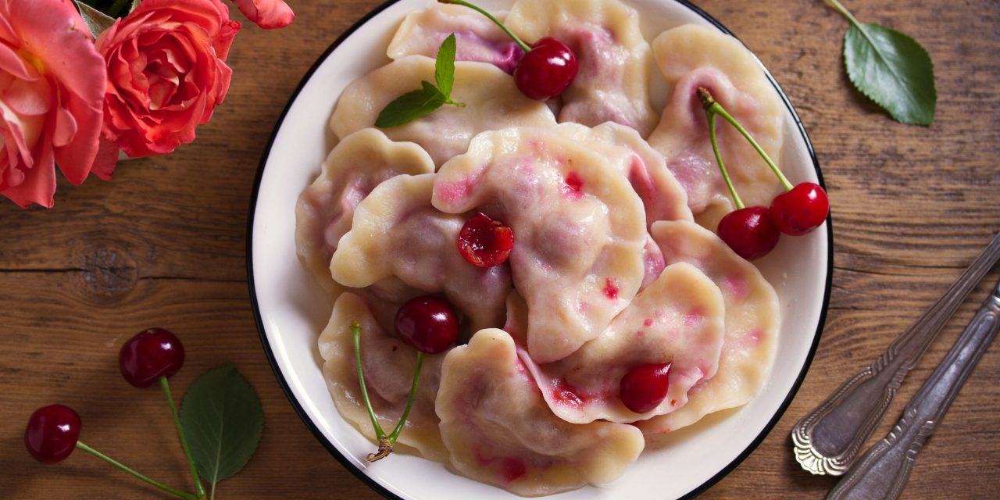

Ingredients
- flour - 450 g
- cold drinking water - 180 ml
- egg - 1 pc.
- salt - on the tip of a knife
- cherries - 400 g
- sugar - 50-70 g
STEP-BY-STEP RECIPE
- Prepare the dumpling batter. Pour the water into a bowl. Add the egg and salt, then whisk together with a whisk. Sift the flour onto the table in a mound and make a well on top.
- Pour the water and egg into the flour and mix gently to form a firm dough. Form it into a ball, wrap it in clingfilm and leave it for 20 minutes. Then knead the dough again and leave for another 20 minutes.
- Prepare the cherries for the dumplings. Wash the fruit and dry it on a paper towel. Remove the pips. Put the cherries in a bowl, cover with sugar and leave for 30 minutes. Discard in a sieve and collect the juice.
- Separate a portion of the dumpling dough and roll out into a layer about 2mm thick. Cut out circles with a thin glass or a notch. Place 4-5 cherries on each one. Tape the edges of the dough firmly together to form a braid.
- Place the dumplings on a board dusted with flour. Gather dough scraps into a lump: after 15-20 minutes it can be rolled out again. Make dumplings from all the remaining dough in this way.
- Pour about 2/3 of the water into a three-liter saucepan and bring to a boil. Gently lower the dumplings into it and stir to prevent them from sticking to the bottom. After the water boils again and the dumplings float, cook them for 3-4 minutes.